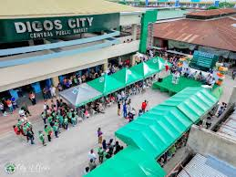
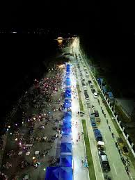
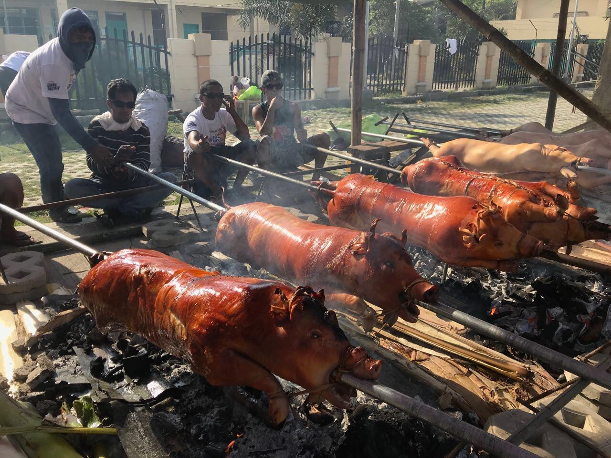

As the capital of Davao del Sur, Digos City is the bustling gateway to the province's wonders. Don't miss the local public markets, which are overflowing with fresh produce, sweet tropical fruits, and the city's famous lechon (roasted pig). The city also features relaxing local parks, the Dawis Beach coast, and is the jump-off point for the highland attractions of Kapatagan.
The bustling provincial capital serving as your launchpad to the mountains and the sea.
Explore sprawling public markets overflowing with local produce, crafts, and street food.
Relax at Dawis Beach, a popular local strip offering beautiful sunrises and calm waves.
As the capital city of the province, Digos City is the central hub where modern convenience meets local tradition. It is a highly urbanized center that still retains a warm, welcoming provincial charm, making it the perfect basecamp for your travels. While it is the jump-off point for Kapatagan and Mt. Apo, Digos is a destination in itself. It boasts the lively Padigosan Festival, historic monuments, and the famous Digos Lechon. Spend a day mingling with locals at the plaza, shopping for souvenirs, or enjoying the coastal breeze along the city's coastal villages.

The best place to buy cheap, fresh tropical fruits and authentic local delicacies to take home.

A relaxing stretch of gray sand beach perfect for early morning jogs or afternoon family picnics.

Taste the city's pride—crispy, savory roasted pig packed with aromatic local herbs.
Fly to Francisco Bangoy International Airport in Davao City, then take a bus south.
November to May is the dry season — ideal for outdoor activities and beach trips.
Davao del Sur offers affordable accommodations, food, and transport options.